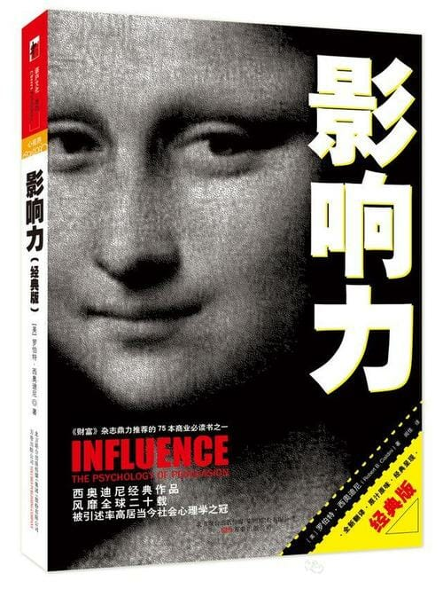

注：【】部分为笔者心得，非原文摘抄。
- 在需要别人帮忙的时候，要是能给一个理由，成功的概率会更大。
- “一分钱一分货，价格贵就等于东西好”。许多研究表明，要是人们对物品的质量拿不准，经常会使用这一范式。
- 文明的进步，就是人们在不假思索中可以做的事情越来越多。——Alfred North Whitehead
- 售货员先展示昂贵的物件更有利可图。
- 互惠及其伴随而来的亏欠还债感，在人类文化中十分普遍。
- 正是因为有了互惠体系，人类才成为人类。——Richard Leakey
- 【吃人嘴软，拿人手短。】
- 互惠原理能用作获取他人顺从的有效策略。
- 善意自然应当以善意回报，但对销售策略却没这个必要。
- 事实上，我们所有人都会一次次地欺骗自己，以便在作出选择之后，坚信自己做得没错。
- 【要在用户心中树立并保持言行一致的形象。】
- 人要是刚刚才说了自己感觉挺好或者过得不错，马上就做出一副小气样会显得很尴尬。
- 商人做小生意几乎都不是贪图利润，而是要建立承诺。有了承诺，之后的生意自然而然地就来了。
- 在接受琐碎请求时务必小心谨慎，因为一旦同意了，它就有可能影响我们的自我认知。
- 要想让承诺达到影响自我形象的效果，必须满足一定的条件：它们得是当事人积极地、公开地、经过一番努力后自由选择的。
- 行为是确定一个人自身信仰、价值观和态度的主要信息源。
- 周围的人认为我们什么样，对我们的自我认知起着十分重要的决定作用。
- 个人承诺是预防客户撕毁合同的一种重要心理机制。
- 公开承诺往往具有持久的效力。
- 为一个承诺付出的努力越多，它对承诺者的影响也就越大。
- 费尽周折才得到某样东西的人，比轻轻松松就得到的人，对这件东西往往更为珍视。——【富不过三代。创业容易守业难。】
- 团队成员的忠诚和奉献精神，能极大地提高团队的凝聚力和生存概率。
- 只有当我们认为外界不存在强大的压力时，我们才会为自己的行为发自内心地负起责任。
- 我们对社会认同的反应方式完全是无意识的、条件反射的，这样一来，偏颇甚至伪造的证据也能愚弄我们。
- 现场有大量其他旁观者在场时，旁观者对紧急情况伸出援手的可能性最低，因为：
- 周围有其他可以帮忙的人，单个人要承担的责任就减少了；
- 很多时候，紧急情况乍看起来并不会显得十分紧急。
- 多元无知效应似乎在陌生人里显得最为突出：因为我们喜欢在公众面前表现得优雅又成熟，又因为我们不熟悉陌生人的反应，所以，置身一群素不相识的人里面，我们有可能无法流露出关切的表情，也无法正确地解读他人关切的表情。
- 一般而言，在需要紧急救助的时候，最佳策略就是减少不确定性，让周围人注意到你的状况，搞清楚自己的责任。
- 社会认同原理的一个病态例证：一些人根据其他陷入困境的人如何行动，决定自己该怎么做。
- 跟风模仿者最可能效法的是跟自己类似的人。
- 在自杀事件上头条新闻之后的一段时间里改变出行方式，能提高我们的生存概率。
- 【保持独立思考，避免成为病态社会认同的随葬品。】
- 利用社会证据的人总能成功地操纵观众，哪怕这些证据是赤裸裸地伪造出来的。——【所以微博上有那么多编段子的。】
- 面对明显是伪造的社会证据，我们只要多保持一点警惕感，就能很好地保护自己了。——【论学会图片搜索的重要性。】
- 【不要在别人拔高自己的行为或媒体的造神运动中充当人肉背景。】
- 我们似乎持有这样的假设：要是很多人在做相同的事情，他们必然知道一些我们不知道的事情。尤其在我们并不确定的时候，我们很乐意对这种集体智慧投入极大的信任。
- 人群很多时候都是错的，因为群体的成员并不是根据优势信息才采取行动，而只是基于社会认同原理在作反应。
- 在决定是否购买某产品时，社会纽带的影响要比消费者对产品本身的好恶强两倍。
- 虽然接触带来的熟悉往往能导致更大的好感，可要是接触本身蕴含了让人反感的体验，就会起到适得其反的作用。
- 人总是自然而然地讨厌带来坏消息的人，哪怕报信的人跟坏消息一点关系都没有。
- 人们对就餐期间接触到的人或事物更为喜欢。
- 我们观看比赛，并不是为了它固有的表现形式或艺术意义，我们是把自我投入了进去。
- 根据关联原理，倘若我们能用一些哪怕是非常表面的方式（比如居住地、学校、公司）让自己跟成功联系起来，我们的公共形象也会显得光辉起来。
- 不去压抑好感因素产生的影响力，听凭这些因素发挥力量，然后用这股力量反过来对付那些想从中获利的人。
- 【盲目服从是出卖自己的灵魂。】
- 头衔比当事人的本质更能影响他人的行为。
- 权力和权威的外部象征，说不定是靠假冒伪劣的材料编造出来的。
- 这个权威是真的专家吗？
- 这个专家说的是真话吗？
- 【对跨领域全才保持警惕。】
- 对失去某种东西的恐惧，似乎要比对获得同一物品的渴望，更能激发人们的行动力。
- 机会越来越少的话，我们的自由也会随之丧失。
- 信息审查对受众的影响，最耐人寻味的一点倒不是受众比从前更渴望这些信息了，而是人们对得不到的信息变得更接受、更包容了。
- 想让信息变得更宝贵，不一定非要封杀它，只要把它弄成稀缺就行了。
- 自由这种东西，给一点又拿走，比完全不给更危险。——【公司福利也是如此。】
- 管教前后不一的父母，最容易教出反叛心强的孩子。
- 稀缺的东西并不因为难以弄到手，就变得更好吃、更好听、更好看、更好用了。
- 只有那些通过弄虚作假、伪造或歪曲证据误导我们快捷响应的人才是正确的还击目标。